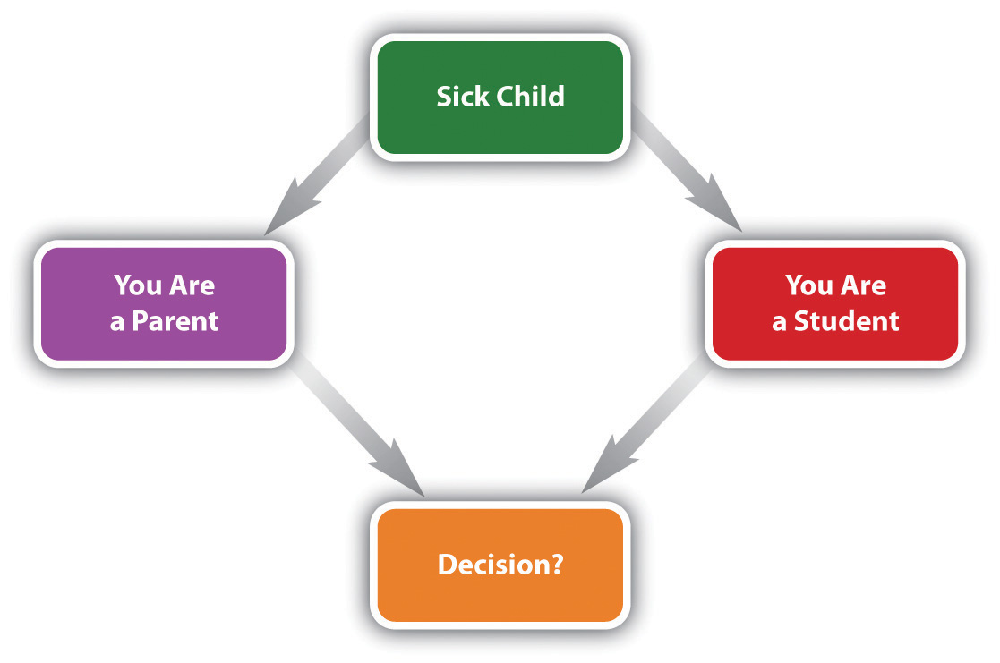

A fundamental feature of social life is social interactionThe ways in which people act with other people and react to how other people are acting., or the ways in which people act with other people and react to how other people are acting. To recall our earlier paraphrase of John Donne, no one is an island. This means that all individuals, except those who choose to live truly alone, interact with other individuals virtually every day and often many times in any one day. For social order, a prerequisite for any society, to be possible, effective social interaction must be possible. Partly for this reason, sociologists interested in microsociology have long tried to understand social life by analyzing how and why people interact they way they do. This section draws on their work to examine various social influences on individual behavior. As you read this section, you will probably be reading many things relevant to your own social interaction.
Chapter 4 "Socialization" emphasized that socialization results from our social interaction. The reverse is also true: we learn how to interact from our socialization. We have seen many examples of this process in earlier chapters. Among other things, we learn from our socialization how far apart to stand when talking to someone else, we learn to enjoy kissing, we learn how to stand and behave in an elevator, and we learn how to behave when we are drunk. Perhaps most important for the present discussion, we especially learn our society’s roles, outlined earlier as a component of social structure. The importance of roles for social interaction merits further discussion here.
Our earlier discussion of roles defined them as the behaviors expected of people in a certain status. Regardless of our individual differences, if we are in a certain status, we are all expected to behave in a way appropriate to that status. Roles thus help make social interaction possible.
As our example of shoppers and cashiers was meant to suggest, social interaction based on roles is usually very automatic, and we often perform our roles without thinking about them. This, in fact, is why social interaction is indeed possible: if we always had to think about our roles before we performed them, social interaction would be slow, tedious, and fraught with error. (Analogously, if actors in a play always had to read the script before performing their lines, as an understudy sometimes does, the play would be slow and stilted.) It is when people violate their roles that the importance of roles is thrown into sharp relief. Suppose you were shopping in a department store, and while you were in the checkout line the cashier asked you how your sex life has been! Now, you might expect such an intimate question from a very close friend, because discussions of intimate matters are part of the roles close friends play, but you would definitely not expect it from a cashier you do not know.
As this example suggests, effective social interaction rests on shared background assumptionsOur understanding of the roles expected of people in a given encounter., or our understanding of the roles expected of people in a given encounter, that are easily violated if one has the nerve to do so. If they are violated, social order might well break down, as you would quickly find if you dared to ask your cashier how her or his sex life has been, or if two students sitting in class violated their student role by kissing each other passionately. Sociologist Harold Garfinkel (1967)Garfinkel, H. (1967). Studies in ethnomethodology. Cambridge, England: Polity Press. argued that unexpected events like these underscore how fragile social order is and remind us that people are constantly constructing the social reality of the situations in which they find themselves. To illustrate his point, he had his students perform a series of experiments, including acting like a stranger in their parents’ home. Not surprisingly, their parents quickly became flustered and wondered what college was doing to their daughters and sons!
These examples indicate that social reality is to a large extent socially constructed. It is what we make of it, and individuals who interact help construct the reality of the situation in which they interact. Sociologists refer to this process as the social construction of realityThe process by which individuals understand and create reality through their interaction with other individuals. (Berger & Luckmann, 1963).Berger, P., & Luckmann, T. (1963). The social construction of reality. New York, NY: Doubleday. Although we usually come into a situation with shared understandings of what is about to happen, as the interaction proceeds the actors continue to define the situation and thus to construct its reality. This view lies at the heart of the symbolic interactionist perspective and helps us understand how and why roles (or to be more precise, our understanding of what behavior is expected of someone in a certain status) make social interaction possible.
Roles help us interact and help make social order possible, but they may even shape our personalities. The idea here is that if we assume a new role, the expectations of that role can change how we interact with others and even the way we think about ourselves. In short, roles can change our personalities.
A telling example of this effect comes from the story of a criminal justice professor from Florida named George Kirkham. In his classes, Kirkham would be critical of the harshness with which police treated suspects and other citizens. One day, some police officers in one of his classes said Kirkham could not begin to understand what it was like being a police officer, and they challenged him to become one. He took up the challenge by gaining admission to a police academy and going through the regular training program for all recruits. Kirkham (1984)Kirkham, G. L. (1984). A professor’s “street lessons.” In R. G. Culbertson (Ed.), “Order under law”: Readings in criminal justice (pp. 77–89). Prospect Heights, IL: Waveland Press. later recounted what happened on his first few days on the job. In one episode, he and his veteran partner went into a bar where an intoxicated patron had been causing trouble. Kirkham politely asked the patron to go with him outside. Evidently surprised by this new police officer’s politeness, the man instead swung at Kirkham and landed a blow. Kirkham could not believe this happened and was forced to subdue his assailant. In another episode, Kirkham and his partner were checking out the driver of a double-parked car. An ugly crowd soon gathered and began making threats. Alarmed, Kirkham opened up his car’s trunk and pulled out a shotgun to keep the crowd away. In recounting this episode, Kirkham wrote that as a professor he quickly would have condemned the police officer he had now become. In a few short days, he had turned from a polite, kind professor into a gruff, angry police officer. His role had changed and, along with it, his personality.
Roles help our interactions run smoothly and automatically and, for better or worse, shape our personalities. But roles can also cause various kinds of problems. One such problem is role conflictThe problems arising when a person has to deal with competing demands on two or more roles that the person is expected to play., which occurs when the roles of our many statuses conflict with each other. For example, say you are a student and also a parent. Your 3-year-old child gets sick. You now have a conflict between your role as a parent and your role as a student. To perform your role as a parent, you should stay home with your sick child. To perform your role as a student, you should go to your classes and take the big exam that had been scheduled weeks ago. What do you do?
Figure 5.3 Example of a Role Conflict
One thing is clear: you cannot perform both roles at the same time. To resolve role conflict, we ordinarily have to choose between one role and the other, which is often a difficult choice to make. In this example, if you take care of your child, you miss your classes and exam; if you go to your classes, you have to leave your child at home alone, an unacceptable and illegal option. Another way to resolve role conflict is to find some alternative that would meet the needs of your conflicting roles. In our sick child example, you might be able to find someone to watch your child until you can get back from classes. It is certainly desirable to find such alternatives, but, unfortunately, they are not always forthcoming. If role conflict becomes too frequent and severe, a final option is to leave one of your statuses altogether. In our example, if you find it too difficult to juggle your roles as parent and student, you could stop being a parent—hardly likely!—or, more likely, take time off from school until your child is older. Most of us in these circumstances would try our best to avoid having to do this.
Another role-related problem is called role strainThe problems arising when a person performing a role has to deal with competing demands on that role.. Here you have one status, and a role associated with it, that is causing problems because of all the demands coming to you from people in other statuses with which your own status is involved. Suppose you were a high school principal. In your one role as a principal, you come into contact with people in several different statuses: teachers, students, custodial and support staff, the superintendent, school board members, the community as a whole, and the news media. These statuses may make competing demands on you in your one role as a principal. If your high school has a dress code, for example, the students may want you to abolish it, the teachers and superintendent may want you to keep it, and maybe the school board would agree with the students. As you try to please all these competing factions, you certainly might experience some role strain!
A third type of role problem occurs when we occupy a status whose role demands a certain type of personality that differs from the one we actually have. Can you imagine a police officer who was afraid of guns? An athlete who was not competitive? A flight attendant who did not like helping people or was afraid of flying? Although most people avoid this type of role problem by not taking on a role to which their personality is ill suited, such problems occur nonetheless. For example, some people who dislike children and do not have the patience to be good parents end up being parents anyway. In another example, your author once knew a new professor who was woefully nervous lecturing in front of students. You might wonder why he became a professor in the first place, but he probably just loved the subject matter so much that he thought he would overcome his nervousness. He did not.
Role strain involves the competing demands placed on someone in a given status from the many people in other statuses. This diagram illustrates the role strain that a high school principal may experience in trying to please teachers, students, and members of other statuses.
From a sociological standpoint, much of our social interaction can be understood by likening it to a performance in a play. As with so many things, Shakespeare said it best when he wrote,
All the world’s a stage,
And all the men and women merely players.
They have their exits and their entrances;
And one man in his time plays many parts. (As You Like It, Act II, Scene 7)
From this perspective, each individual has many parts or roles to play in society, and many of these roles specify how we should interact in any given situation. These roles exist before we are born, and they continue long after we die. The culture of society is thus similar to the script of a play. Just as actors in a play learn what lines to say, where to stand on the stage, how to position their bodies, and so many other things, so do we learn as members of society the roles that specify how we should interact.
This fundamental metaphor was developed and popularized by sociologist Erving Goffman (1959)Goffman, E. (1959). The presentation of self in everyday life. Garden City, NY: Doubleday. in what he called a dramaturgical approachErving Goffman’s metaphor that likens social interaction to a performance in a dramatic production.. By this he meant that we can understand social interaction as if it were a theatrical performance. People who interact are actors on a stage, the things they say and do are equivalent to the parts actors play, and any people who observe their interaction are equivalent to the audience at a play. As sociologists Jonathan H. Turner and Jan E. Stets (2006, p. 26)Turner, J. H., & Stets, J. E. (2006). Sociological theories of human emotions. Annual Review of Sociology, 32, 25–52. summarize this approach, “Individuals are, in essence, dramatic actors on a stage playing parts dictated by culture, and, like all theater, they are given some dramatic license in how they play roles, as long as they do not deviate too far from the emotional script provided by culture.”
Beyond these aspects of his theatrical analogy, Goffman also stressed that the presentation of self guides social interaction just as it guides behavior in a play. Actors in a play, he wrote, aim to act properly, which at a minimum means they need to say their lines correctly and in other ways carry out their parts as they were written. They try to convey the impression of their character the playwright had in mind when the play was written and the director has in mind when the play is presented.
Such impression managementErving Goffman’s term for the process whereby individuals who are interacting try to convey a favorable impression of themselves., Goffman wrote, also guides social interaction in everyday life. When people interact, they routinely try to convey a positive impression of themselves to the people with whom they interact. Our behavior in a job interview differs dramatically (pun intended) from our behavior at a party. The key dimension of social interaction, then, involves trying to manage the impressions we convey to the people with whom we interact. We usually do our best, consciously or unconsciously, to manage the impressions we convey to others and so to evoke from them reactions that will please us.
Goffman wrote about other aspects of social interaction that affect our efforts to manage these impressions. Again using his dramaturgical metaphor, he said that some interaction occurs in the “frontstage,” or front region, while other interaction occurs in the “backstage,” or back region (Goffman, 1959, p. 128).Goffman, E. (1959). The presentation of self in everyday life. Garden City, NY: Doubleday. In a play, of course, the frontstage is what the audience sees and is obviously the location in which the actors are performing their lines. Backstage, they can do whatever they want, and the audience will have no idea of what they are doing (as long as they are quiet). Much of our everyday interaction is on the frontstage, where an audience can see everything we do and hear everything we say. But we also spend a lot of time on the backstage, by ourselves, when we can do and say things in private (such as singing in the shower) that we would not dare do or say in public.
How we dress is also a form of impression management. You are the same person regardless of what clothes you wear, but if you dress for a job interview as you would dress for a party (to use our earlier example), the person interviewing you would get an impression you might not want to convey. If you showed up for a medical visit and your physician were wearing a bathing suit, wouldn’t you feel just a bit uneasy?
Impression Management and Job Interviewing
Erving Goffman’s (1959)Goffman, E. (1959). The presentation of self in everyday life. Garden City, NY: Doubleday. concept of impression management, discussed in the text, is one of the key sociological insights for the understanding of social interaction. One reason the concept has been so useful, and one reason that it interests many college students, is that impression management has so much practical relevance. Anyone who has gone out on a first date or had a job interview can immediately recognize that impression management is something we all do and can immediately realize the importance of effective impression management.
Impression management is important in many settings and situations but perhaps especially important in the job interview. Many scholarly publications and job-hunting manuals emphasize the importance of proper impression management during a job interview, especially an interview for a full-time, well-paying job, as opposed to a fast-food job or something similar (Van Iddekinge, McFarland, & Raymark, 2007).Van Iddekinge, C. H., McFarland, L. A., & Raymark, P. H. (2007). Antecedents of impression management use and effectiveness in a structured interview. Journal of Management, 33, 752–773. The strategies they discuss include impression management involving dress, body language, and other dimensions of social interaction. Interviewing tips they recommend include (a) dressing professionally, (b) showing up early for the interview, (c) shaking hands firmly while smiling and looking the interviewer in the eye, (d) sitting with a comfortable but erect posture without crossing one’s arms, (e) maintaining eye contact with the interviewer throughout the interview, and (f) shaking hands at the end of the interview and saying thank you.
These strategies and tips are probably more familiar to college students from wealthy backgrounds than to working-class people who have not gone to college. Sociologists emphasize the importance of cultural capital, or attitudes, skills, and knowledge that enable people to achieve a higher social status (Bourdieu & Passeron, 1990).Bourdieu, P., & Passeron, J.-C. (1990). Reproduction in education, society and culture. Newbury Park, CA: Sage. People who grow up in poverty or near-poverty, including disproportionate numbers of people of color, are less likely than those who grow up in much wealthier circumstances to possess cultural capital. The attitudes, skills, and knowledge that many college students have and take for granted, including how to conduct oneself during a job interview, are much less familiar to individuals who grow up without cultural capital. To use some sociological language, they know much less about how to manage their impressions during a job interview should they get one and thus are less likely to be hired after an interview.
For this reason, many public and private agencies in poor and working-class communities around the country regularly hold workshops on job interviewing skills. These workshops emphasize strategies similar to those outlined earlier. One of the many organizations that offer these workshops and provides related services is the Los Angeles Urban League (http://www.laul.org/milken-family-literacy-and-youth-training-center) through its Milken Family Literacy and Youth Training Center. According to its Web site, this center “provides a comprehensive system of services of programs and services to assist youth and adults in developing the skills to compete for and obtain meaningful employment.” Much of what the youth and adults who attend its workshops and other programs are learning is impression-management skills that help them find employment. Goffman’s concept is helping make a difference.
Individuals engage in impression management, but so do groups and organizations. Consider the medical visit just mentioned. A physician’s office usually “looks” a certain way. It is clean, it has carpeting, it has attractive furniture, and it has magazines such as People, Time, and Sports Illustrated. Such an office assures patients by conveying the impression that the physician and staff are competent professionals. Imagine that you entered a physician’s office and saw torn carpeting, some broken furniture, and magazines such as Maxim and Playboy. What would be your instant reaction? How soon would you turn around and leave the office? As this fanciful example illustrates, impression management is critically important for groups and organizations as well as for individuals.
Life is filled with impression management. Compare the decor of your favorite fast-food restaurant with that of a very expensive restaurant with which you might be familiar. Compare the appearance, dress, and demeanor of the servers and other personnel in the two establishments. The expensive restaurant is trying to convey an image that the food will be wonderful and that the time you spend there will be memorable and well worth the money. The fast-food restaurant is trying to convey just the opposite impression. In fact, if it looked too fancy, you would probably think it was too expensive.
Some people go to great efforts to manage the impressions they convey. You have probably done so in a job interview or on a date. In New York City, the capital of book publishing, editors of large publishing companies and “superagents” for authors are very conscious of the impressions they convey, because much of the publishing industry depends on gossip, impressions, and the development of rapport. Editors and agents often dine together in one of a few very expensive “power” restaurants, where their presence is certain to be noted. Publishers or senior editors who dine at these restaurants will eat only with celebrity authors, other senior editors or publishers, or important agents. Such agents rarely dine with junior editors, who are only “allowed” to eat with junior agents. To eat with someone “beneath” your standing would convey the wrong impression (Arnold, 1998).Arnold, M. (1998, June 11). Art of foreplay at the table. The New York Times, p. B3.
When we interact with others, certain emotionsFeelings that begin with a stimulus and that often involve psychological changes and a desire to engage in specific actions.—feelings that begin with a stimulus and that often involve psychological changes and a desire to engage in specific actions—often come into play. To understand social interaction, it is helpful to understand how these emotions emerge and how they affect and are affected by social interaction.
Not surprisingly, evolutionary biologists and sociologists differ in their views on the origins of emotions. Many evolutionary biologists think that human emotions exist today because they conferred an evolutionary advantage when human civilization began eons ago (Plutchik, 2001).Plutchik, R. (2001). The nature of emotions. American Scientist, 89, 344–350. In this way of thinking, an emotion such as fear would help prehistoric humans (as well as other primates and organisms) survive by enabling them to recognize and avoid dangerous situations. Humans who could feel and act on fear were thus more likely to survive than those who could not. In this way, fear became a biological instinct and part of our genetic heritage. The fact that emotions such as anger, fear, hate, joy, love, and sadness are found across the world and in every culture suggests that emotions are indeed part of our biological makeup as humans.
In contrast to the evolutionary approach, a sociological approach emphasizes that emotions are socially constructed (Turner & Stets, 2006).Turner, J. H., & Stets, J. E. (2006). Sociological theories of human emotions. Annual Review of Sociology, 32, 25–52. To recall our earlier discussion of the social construction of reality, this means that people learn from their culture and from their social interactions which emotions are appropriate to display in which situations. In particular, statuses and the roles associated with them involve expectations of specific emotions that are appropriate or inappropriate for a given status in a given social setting. Someone attending a wedding is expected to look and be happy for the couple about to be married. Someone attending a funeral is expected to look and be mournful. Emotions are socially constructed because they arise out of the roles we play and the situations in which we find ourselves.
The origins of emotions aside, emotions still play an essential role in social interaction, and social interaction gives rise to emotions. Accordingly, sociologists have discussed many aspects of emotions and social interaction (Turner & Stets, 2006),Turner, J. H., & Stets, J. E. (2006). Sociological theories of human emotions. Annual Review of Sociology, 32, 25–52. a few of which we outline here. One important aspect is that insincere displays of emotion can be used to manipulate a situation. For example, a child or adult may cry to win some sympathy, a display popularly called “crocodile tears.” A staple of many novels and films is to pretend to be sorry that a rich, elderly relative is very ill in order to win a place in the relative’s will. By the same token, though, people who display inappropriate emotions risk social disapproval. If you are attending a funeral of someone you did not really know that well and, out of boredom, think of a recent episode of The Simpsons that makes you chuckle, the glares you get will make it very clear that your emotional display is quite inappropriate.
As this example suggests, a second aspect of emotions is that we often find ourselves in situations that “demand” certain emotions we simply do not feel. This discrepancy forces most of us to manage our emotions to avoid social disapproval, a process called emotion work (Hochschild, 1983).Hochschild, A. R. (1983). The managed heart: Commercialization of human feeling. Berkeley: University of California Press. Having to engage in emotion work in turn often leads us to feel other emotions such as anger or frustration.
A third aspect is that gender influences the emotions we feel and display. In sociology, work on gender and emotions often falls under the larger topic of femininity and masculinity as expressions of gender roles, which Chapter 11 "Gender and Gender Inequality" examines at greater length. Suffice it to say here, though at the risk of sounding stereotypical, that certain gender differences in emotions and the display of emotions do exist. For example, women cry more often and more intensely than men, and men outwardly express anger much more often than women. A key question is whether gender differences in emotions (as well as other gender differences) stem more from biology or more from culture, socialization, and other social origins. Chapter 11 "Gender and Gender Inequality" again has more to stay about this basic debate in the study of gender.
A final aspect is that emotions differ across the social classes. Jonathan Turner (2010)Turner, J. H. (2010). The stratification of emotions: Some preliminary generalizations. Sociological Inquiry, 80, 168–199. notes that some emotions, such as happiness and trust, are positive emotions, while other emotions, such as anger, fear, and sadness, are negative emotions. Positive emotions, he says, lead to more successful social interaction and help gain needed resources (e.g., a cheerful demeanor and self-confidence can help win a high-paying job or attract a romantic partner), while negative emotions have the opposite effect. He adds that positive emotions are more often found among the upper social classes, while negative emotions are more often found among the poorer social classes. Emotion is thus “a valued resource that is distributed unequally” (Turner, 2010, pp. 189–190).Turner, J. H. (2010). The stratification of emotions: Some preliminary generalizations. Sociological Inquiry, 80, 168–199. The upper classes benefit from their positive emotions, while the lower classes suffer various problems because of their negative emotions. In this manner, the social class difference in positive versus negative emotions helps reinforce social inequality.
Social interaction is both verbal and nonverbal. As Chapter 3 "Culture" discussed, culture greatly influences nonverbal communicationWays of communicating that do not involve talking., or ways of communicating that do not involve talking. Nonverbal communication includes the gestures we use and how far apart we stand when we talk with someone. When we do talk with someone, much more nonverbal interaction happens beyond gestures and standing apart. We might smile, laugh, frown, grimace, or engage in any number of other facial expressions (with or without realizing we are doing so) that let the people with whom we interact know how we feel about what we are saying or they are saying. Often how we act nonverbally is at least as important, and sometimes more important, than what our mouths are saying.
Body posture is another form of nonverbal communication, and one that often combines with facial expressions to convey how a person feels. People who are angry may cross their arms or stand with their hands on their hips and glare at someone. Someone sitting slouched in a chair looks either very comfortable or very bored, and neither posture is one you would want to use at an interview for a job you really wanted to get. Men and women may engage in certain postures while they are flirting with someone. Consciously or not, they sit or stand in certain ways that convey they are romantically interested in a particular person and hopeful that the person will return this interest.
Personal Space and Standing Apart: Why People From Other Countries Think Americans Are Cold and Distant
As the text discusses, one aspect of nonverbal interaction involves how far we stand apart from someone with whom we are talking. To amplify on a point first mentioned in Chapter 2 "Eye on Society: Doing Sociological Research", Americans and the citizens of Great Britain and the northern European nations customarily stand about three to four feet apart from someone who is a stranger or acquaintance. If we are closer to this person without having to be closer—that is, we’re not in a crowded elevator, bar, or other setting in which it is impossible to be farther apart—we feel uncomfortable.
In contrast, people in many parts of the world—South and Central America, Africa, the Middle East, and Western European nations such as France, Spain, and Italy—stand much closer to someone with whom they are talking. In these nations, people stand only about 9 to 15 inches apart when they talk. If someone for some reason wanted to stand another two feet away, a member of one of these nations would view this person as unfriendly and might well feel insulted (Ting-Toomey, 1999; Samovar, Porter, & McDaniel, 2010).Ting-Toomey, S. (1999). Communicating across cultures. New York, NY: Guilford Press; Samovar, L. A., Porter, R. E., & McDaniel, E. R. (2010). Communication between cultures (7th ed.). Boston, MA: Wadsworth.
Your author once found himself in this situation in Maine. I was talking to a professor from a Middle Eastern nation who was standing very close to me. To feel more comfortable, I moved back a step or two, without really realizing it. The professor moved forward, evidently to feel more comfortable himself, and then I moved back. He again moved forward, and I again moved back. Within a few minutes, we had moved about 20 to 30 feet!
When Americans travel abroad, anecdotal evidence indicates that they often think that people in other nations are pushy and demanding and that these citizens view Americans as cold and aloof (Ellsworth, 2005).Ellsworth, M. (2005, December 12). Crossing cultures—Personal space. ExPatFacts. Retrieved from http://www.expatfacts.com/2005/12/crossing_cultures_personal_spa.html Although there are many cultural differences between Americans and people in other lands, personal space is one of the most important differences. This fact yields an important lesson for any American who travels abroad, and it also illustrates the significance of culture for behavior and thus the value of the sociological perspective.
As with emotions, gender appears to influence how people communicate nonverbally (Hall, 2006).Hall, J. A. (2006). Women’s and men’s nonverbal communication: Similarities, differences, stereotypes, and origins. In V. Manusov & M. L. Patterson (Eds.), The Sage handbook of nonverbal communication (pp. 201–218). Thousand Oaks, CA: Sage. For example, a number of studies find that women are more likely than men to smile, to nod, and to have more expressive faces. Once again, biologists and social scientists disagree over the origins of these and other gender differences in nonverbal communication, with social scientists attributing the differences to gender roles, culture, and socialization.
Gender differences also exist in two other forms of nonverbal interaction: eye contact and touching. Women tend more than men to look directly into the eyes of people with whom they interact, a process called gazing. Such gazing is meant to convey interest in the interaction and to be nonthreatening. On the other hand, men are more likely than women to stare at someone in a way that is indeed threatening. A man might stare at a man because he resents something the other man said or did; a man might stare at a woman because he eyes her as a sexual object. In touching, men are more likely than women to touch someone, especially when that someone is a woman; as he guides her through a doorway, for example, he might put his arm behind her arm or back. On the other hand, women are more likely than men to touch themselves when they are talking with someone, a process called self-touching. Thus if a woman is saying “I think that…,” she might briefly touch the area just below her neck to refer to herself. Men are less likely to refer to themselves in this manner.
If a goal of this book is to help you understand more about yourself and the social world around you, then a sociological understanding of social interaction should help your own social interaction and also that of other people.
We see evidence of the practical value of a sociological understanding in the “Sociology Making a Difference” and “Learning From Other Societies” boxes in this chapter. The “Sociology Making a Difference” box discussed the impact that Goffman’s concept of impression management has made in job hunting in general and particularly in efforts to improve the employment chances of the poor and people of color. The “Learning From Other Societies” box discussed why Americans sometimes have trouble interacting with people abroad. Differences in personal space can lead to hurt feelings between Americans and people in other nations.
If we are aware, then, of the importance of impression management, we can be more conscious of the impressions we are making in our daily interactions, whether they involve talking with a professor, interviewing for a job, going out on a first date, or speaking to a police officer who has pulled you over. By the same token, if we are aware of the importance of personal space, we can improve our interactions with people with different cultural backgrounds. Thus, if we are Americans of northern European ancestry and are interacting with people from other nations, we can be aware that physical distance matters and perhaps stand closer to someone than we might ordinarily feel comfortable doing to help the other person feel more comfortable and like us more. Conversely, readers who are not Americans of northern European ancestry might move back a step or two to accomplish the same goals.
To illustrate the importance of enhancing social interaction among people from different cultural backgrounds, the federal government has prepared a document called “Developing Cultural Competence in Disaster Mental Health Programs: Guiding Principles and Recommendations” (http://mentalhealth. samhsa.gov/publications/allpubs/sma03-3828/sectiontwo.asp). The document is designed to help mental-health professionals who are assisting victims of natural disasters in other countries or within the United States. It warns professionals that cultural differences may impede their efforts to help victims: “Both verbal and nonverbal communication can be barriers to providing effective disaster crisis counseling when survivors and workers are from different cultures. Culture influences how people express their feelings as well as what feelings are appropriate to express in a given situation. The inability to communicate can make both parties feel alienated and helpless.” It also advises professionals to be aware of the personal space needs of the people they are trying to help: “A person from one subculture might touch or move closer to another as a friendly gesture, whereas someone from a different culture might consider such behavior invasive. Disaster-crisis counselors must look for clues to a survivor’s need for space. Such clues may include, for example, moving the chair back or stepping closer.” As this document makes clear, if we can draw on a sociological understanding to enhance our social interaction skills, we can help not only ourselves but also people who come from other cultures.